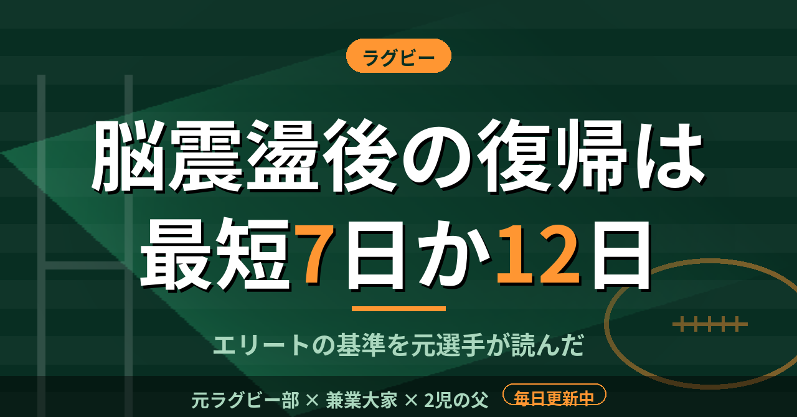

ラグビー脳震盪後の最短復帰は7日か12日。ワールドラグビーの基準を、歯を折った元選手が読んだ
ラグビーを続けた12年間で、歯が折れたことがある。今はインプラントを入れている。あの頃は、痛くなければプレーに戻るのが当たり前だった。頭を打った日も、同じ感覚で翌週の練習に出ていた。
復帰は「何日後」と決まっている
ワールドラグビーは2022年7月、脳震盪後の競技復帰ガイドラインを改めた。対象は頭部損傷評価の一時的退出プロトコルが適用されるエリートの試合である。ワールドラグビー自身の発表でも、脳震盪と診断された選手の大半は次の試合を欠場する見込み、と説明されている。
個別のリハビリは6段階。最初のステージ1aは安静で、症状が消えなければ次に進めない。どの段階でも、無症状が続いている場合にだけ進める。
最短の復帰日は2通りある。既往歴がなく、後の評価でも基準値に戻った選手は7日目。既往歴がある選手や、評価が基準値に戻らなかった選手は12日目だ。どちらも6段階をすべて終え、専門医の診察を受けることが条件になる。以前は最短で6日目だったと報じられており、それより長く休ませる方向に改められた形だ。
日数だけを見ると長く感じる。ただ、試合は週に1回しかない。7日目なら、順調な場合でも翌週の試合の直前までは戻れない。それが基準の狙いなのだろうと僕は読んだ。
既往歴の定義が細かい
既往歴の条件は6つある。直近3か月以内の脳震盪、過去12か月に3回以上、通算5回以上、21日以上回復が長引いた経験などだ。回数や期間で数える仕組みになっている。
僕が現役の頃は、頭を打ったかどうかを自分で申告するだけだった。何回目か数えるという発想がそもそもなかった。数えていれば、あの頃の自分も何度か休んでいたかもしれない。
しかも申告するのは、一番試合に出たがっている本人だ。「大丈夫です」と言うほうが、チームの中での自分の居場所を守れる。そういう空気が、グラウンドには確かにあった。補欠の時期が長かった僕は、なおさら言い出せなかったと思う。
読んで思ったこと
この基準はエリートの試合向けで、学校や社会人のチームにそのまま当てはまるわけではない。ここに書いた日数は、あくまでその枠組みの話だ。ワールドラグビーの資料でも、対象は頭部損傷評価の仕組みを備えた大会に限られている。
それでも、休む日数を先に決めておくという考え方は、アマチュアにも通じる。試合に出たい本人の判断より、先に決まった手順のほうが選手を守る。タックルの高さを下げて頭の接触を減らす流れと、休ませる基準を先に決める流れは、同じ方向を向いている。
本人が言い出せないなら、周りが止める仕組みを作るしかない。これは指導者にも、親にも関わる話だ。
2歳と0歳の子がいる今、もし子どもがラグビーを始めるなら、最初に確認したいのはこの点だ。チームに復帰の手順があるかどうか。それを見て決める。
この記事は note にも掲載しています。